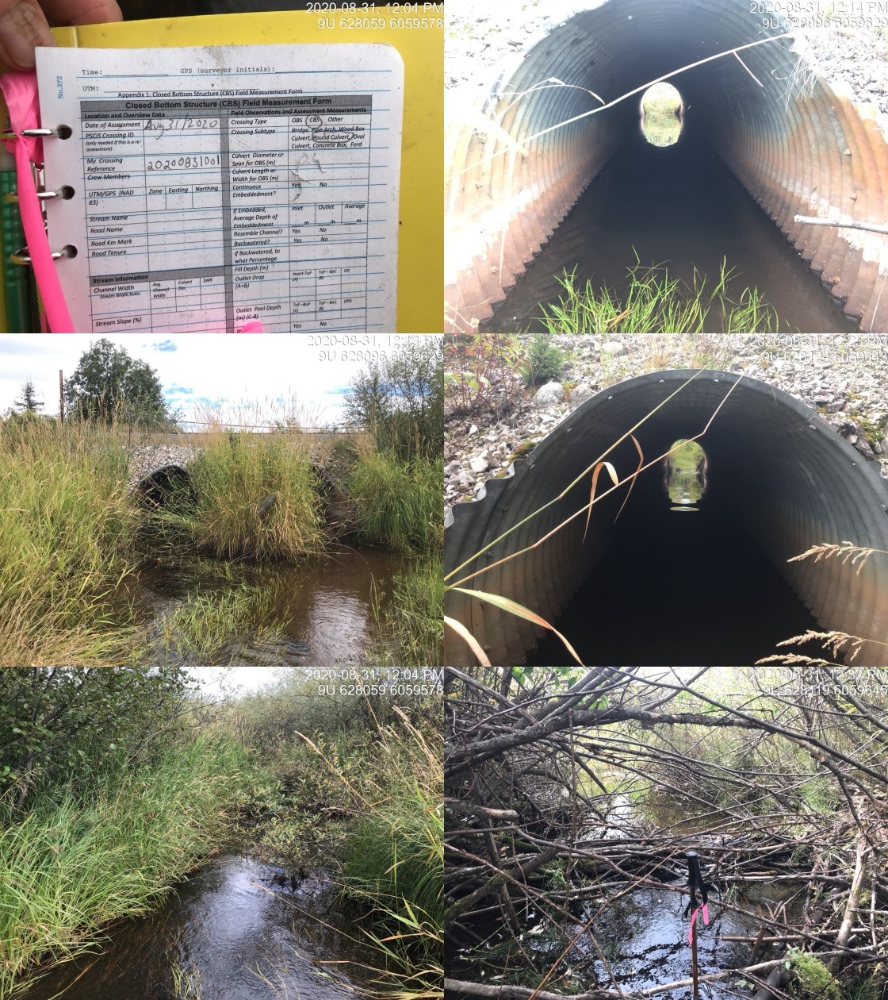

Appendix - 124500 - Helps Creek
Site Location
PSCIS crossing 124500 is located on Helps Creek on Lawson Road approximately 5km south of Telkwa. The culvert is located approximately 1.7km upstream from the confluence with the Bulkley River. Lawson Road is the responsibility of the Ministry of Transportation and Infrastructure.
Background
At crossing 124500, Helps Creek is a fourth order stream with a watershed area upstream of the crossing of approximately 41.4km2. The elevation of the watershed ranges from a maximum of 1350m to 530m at PSCIS crossing 124500. Upstream of the Lawson Road, longnose sucker, longnose dace, cutthroat trout, rainbow trout, and dolly varden have been previously recorded as present upstream of the crossing and coho, steelhead, rainbow trout and burbot have been observed below (MoE 2020a). A backwatered and passable rail stream crossing consisting of three round culverts (PSCIS 197666) is located under the railway approximately 1.2km downstream. There is one major tributary to Helps Creek that intersects the mainstem of the creek approximately 1.7km upstream of Lawson Road. There are several stream crossing structures documented on this tributary with the first of which located 4.7km upstream of Lawson Road. The adjacent landowner anecdotally reported a drop in numbers of fry/parr in stream over last 20 years. At the time of the survey a staff gauge was present just upstream of crossing.
PSCIS stream crossing 124500 was ranked as a high priority for follow up by Irvine (2018). The site was assessed by Smith (2018) in 2017 with maintenance to clear the inlet of debris recommended and replacement of the crossing assessed as a low priority. A map of the watershed is provided in map attachment 093L.118.
Stream Characteristics at Crossing
At the time of the survey, the culvert under Lawson Road was un-embedded, non-backwatered and ranked as a barrier to upstream fish passage acoording to the provincial protocol (MoE 2011). The pipe was 1.5m in diameter with a length of 14m, a culvert slope of 1%, a stream width ratio of 2.4 and an outlet drop of 0m (Table 5.23). Water temperature was 10\(^\circ\)C, pH was 7.6 and conductivity was 236uS/cm.
Stream Characteristics Downstream
The stream was surveyed downstream from the culvert for 415m beginning at the culvert location with a short survey conducted adjacent to the downstream railway (Figures 5.28 - 5.29). Total cover amount was rated as abundant with overhanging vegetation dominant. Cover was also present as small woody debris, large woody debris, undercut banks, deep pools, and instream vegetation (Table 5.25). The average channel width was 3.6m, the average wetted width was 2.3m and the average gradient was 2.5%. The dominant substrate was gravels with fines subdominant. Within the area surveyed, the channel flowed through an agricultural field with minimal riparian buffer present. The habitat was rated as high value with gravels present suitable for resident, fluvial and anadromous salmonid spawning throughout. At the railway culverts located 1.3km downstream of Lawson Road, the habitat transitioned to wetland type habitat with low velocities likely influenced by beaver (Table 5.24). The landowners of the adjacent property noted that they had seen large numbers of lamprey in the railway culverts in the past and that they suspected negative impacts on the lamprey from dredging by CN Rail.
Stream Characteristics Upstream
The stream was surveyed immediately upstream from 124500 for approximately 200m then an adjacent road was walked to access the stream 1100m upstream of the crossing within an area comprised of swamp (Figures 5.30 - 5.31). Within the area immediately upstream of Lawson Road, the stream had multiple braided channels flowing within beaver influenced wetland areas. Within the area surveyed, total cover amount was rated as moderate with small woody debris dominant. Cover was also present as large woody debris, undercut banks, deep pools, overhanging vegetation, and instream vegetation (Table 5.25). The average channel width was 4.8m, the average wetted width was 4.1m and the average gradient was 0.8%. The dominant substrate was fines with gravels subdominant. At top end of the site, the beaver ponds had wetted widths of approximately 12-14m wide and estimated depths of 1m. Habitat value was rated as moderate for salmonid rearing with habitat noted as suitable for coho and cuthrout rearing.
Table 5.26 presents preliminary fish passage modelling data for crossing 124500 with spawning and rearing habitat estimated for chinook, coho, sockeye and steelhead. Modelled estimates of the total length of salmon or steelhead habitat upstream of the crossing before potential barriers are 0.8km of potential spawning habitat and 9.3km of potential rearing habitat.
Structure Remediation and Cost Estimate
Replacement of PSCIS crossing 124500 with a bridge (10m span) is recommended in the long term. The cost of the work is estimated at $500,000 for a cost benefit of 18 linear m/$1000 and 86.4m2/$1000.
Conclusion
A conservative estimate of mainstem and major tributary habitat upstream of crossing 124500 is 9km. Habitat in the areas surveyed was rated as moderate value for salmonid rearing with habitat noted as particulary suitable for coho and cutthrout. Although classified as a “barrier” according to the provincial metric, the crossing is likely passable to adult salmonids during moderate flows. During low flow periods, water depths in the culverts may be an impediment to upstream passage for large adult fish. Lawson Road is the responsibility of the Ministry of Transportation and Infrastructure. The crossing was ranked as a moderate priority for proceeding to design for replacement.
| Location and Stream Data |
|
Crossing Characteristics | – |
|---|---|---|---|
| Date | 2020-08-31 | Crossing Sub Type | Round Culvert |
| PSCIS ID | 124500 | Diameter (m) | 1.5 |
| External ID | – | Length (m) | 14 |
| Crew | KP, AI | Embedded | No |
| UTM Zone | 9 | Depth Embedded (m) | – |
| Easting | 627552 | Resemble Channel | No |
| Northing | 6058697 | Backwatered | No |
| Stream | Helps Creek | Percent Backwatered | – |
| Road | Lawson Road | Fill Depth (m) | 0.8 |
| Road Tenure | MoTi local | Outlet Drop (m) | 0 |
| Channel Width (m) | 3.6 | Outlet Pool Depth (m) | 1.3 |
| Stream Slope (%) | 2.5 | Inlet Drop | No |
| Beaver Activity | Yes | Slope (%) | 1 |
| Habitat Value | Medium | Valley Fill | Deep Fill |
| Final score | 21 | Barrier Result | Barrier |
| Fix type | Replace with New Open Bottom Structure | Fix Span / Diameter | 10 |
| Photos: From top left clockwise: Road/Site Card, Barrel, Outlet, Downstream, Upstream, Inlet. | |||
| Comments: Wetland type habitat upstream with stream channel containing abundant gravels downstream. |
| Location and Stream Data |
|
Crossing Characteristics | – |
|---|---|---|---|
| Date | 2020-08-29 | Crossing Sub Type | Round Culvert |
| PSCIS ID | 197666 | Diameter (m) | 2 |
| External ID | 2020083101 | Length (m) | 22 |
| Crew | AI, KP | Embedded | Yes |
| UTM Zone | 9 | Depth Embedded (m) | 0.15 |
| Easting | 628108 | Resemble Channel | Yes |
| Northing | 6059632 | Backwatered | Yes |
| Stream | Helps Creek | Percent Backwatered | 100 |
| Road | CN Railway | Fill Depth (m) | 1 |
| Road Tenure | Canadian National | Outlet Drop (m) | 0 |
| Channel Width (m) | 6 | Outlet Pool Depth (m) | 0.3 |
| Stream Slope (%) | 0 | Inlet Drop | No |
| Beaver Activity | Yes | Slope (%) | 0 |
| Habitat Value | High | Valley Fill | Deep Fill |
| Final score | 14 | Barrier Result | Passable |
| Fix type | – | Fix Span / Diameter | – |
| Photos: From top left clockwise: Road/Site Card, Barrel, Outlet, Downstream, Upstream, Inlet. | |||
| Comments: Passable and fully backwatered structure. Landowner reports that lamprey (~40cm x 20) at crossing inside of the culvert in the past. |
| Site | Location | Length Surveyed (m) | Channel Width (m) | Wetted Width (m) | Pool Depth (m) | Gradient (%) | Total Cover | Habitat Value |
|---|---|---|---|---|---|---|---|---|
| 124500 | Upstream | 1100 | 4.8 | 4.1 | – | 0.8 | moderate | moderate |
| 124500 | Downstream | 415 | 3.6 | 2.3 | 0.7 | 2.5 | abundant | high |
| Habitat | Potential | Remediation Gain | Remediation Gain (%) |
|---|---|---|---|
| Salmon Network (km) | 33.5 | 12.4 | 37 |
| Salmon Lake and Reservoir (ha) | 4.2 | 4.1 | 98 |
| Salmon Wetland (ha) | 66.8 | 66.8 | 100 |
| Steelhead Network (km) | 36.6 | 13.4 | 37 |
| Steelhead Lake and Reservoir (ha) | 4.2 | 4.1 | 98 |
| Steelhead Wetland (ha) | 66.8 | 66.8 | 100 |
| CH Spawning (km) | 0.0 | 0.0 | – |
| CH Rearing (km) | 0.0 | 0.0 | – |
| CO Spawning (km) | 0.8 | 0.8 | 100 |
| CO Rearing (km) | 9.5 | 8.1 | 85 |
| SK Spawning (km) | 0.0 | 0.0 | – |
| SK Rearing (km) | 0.0 | 0.0 | – |
| ST Spawning (km) | 0.0 | 0.0 | – |
| ST Rearing (km) | 9.4 | 8.0 | 85 |
| All Spawning (km) | 0.8 | 0.8 | 100 |
| All Rearing (km) | 10.7 | 9.3 | 87 |
| All Spawning and Rearing (km) | 10.7 | 9.3 | 87 |
| * Model data is preliminary and subject to adjustments. |
Figure 5.28: Habitat downstream of PSCIS crossing 124500.
Figure 5.29: Habitat downstream of crossing 124500 below the railway culverts.
Figure 5.30: Habitat upstream of PSCIS crossing 124500.
Figure 5.31: Habitat upstream of PSCIS crossing 124500.